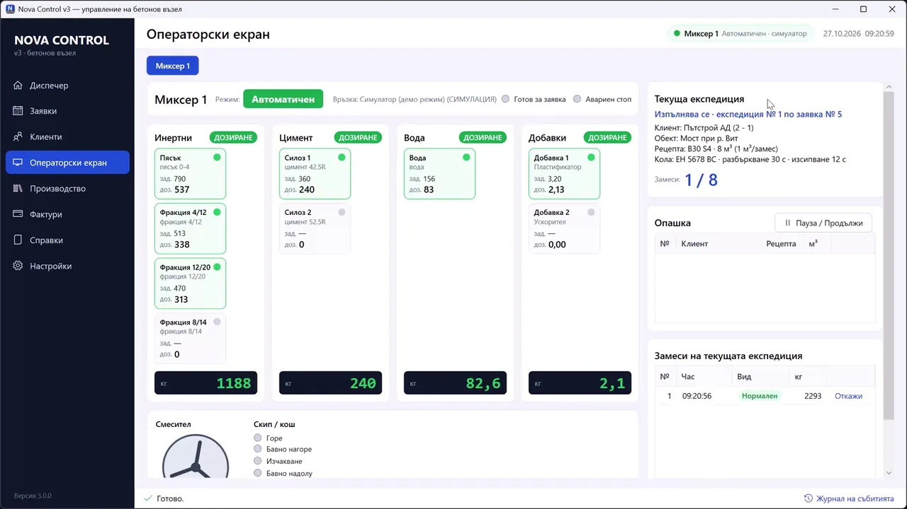

Nova Control
One Windows program that runs a ready-mix concrete plant’s whole day, from the customer’s order and truckloads to batch records, invoices and reports. It also talks in real time to the plant’s existing PLCs (the industrial computers that run the machines).
- 524
- automated checks
- 19
- built-in reports
- ~1 MB
- single program, nothing else to install
Built to survive failures: if the connection drops or the PC restarts mid-order, nothing is produced twice and nothing is lost.

Play demo · 2:58How it works and how it was tested
What it does
A dispatcher screen with today’s orders, each mixer and the stock in every bin. Truckloads are split into batches with exact material weights, adjusted for the moisture in the sand and gravel. A live operator screen shows weights as the PLC doses them. The program also covers recipes to EN 206, delivery notes, invoices in euro, CSV/Excel reports and automatic daily backups. The interface is in Bulgarian.
The hard part
It must work with the PLCs and control programs already installed at the plants, unchanged. The industrial communication protocols (Omron FINS over network and serial links) were implemented from scratch. The memory layout was traced from the plant’s own PLC program. Before every order it checks the hopper numbers in the PLC, and a mismatch stops the queue instead of dosing from the wrong bin.
Testing and status
524 automated checks run against a built-in PLC simulator over real network connections. They cover 3,150 order layouts, 25% packet loss, slow links and restarts mid-exchange. After several audit rounds, every confirmed finding got a fix and a regression test, growing the suite from 81 to 524 checks. The software is feature-complete. The next step is a bench test with a real PLC, before any plant.